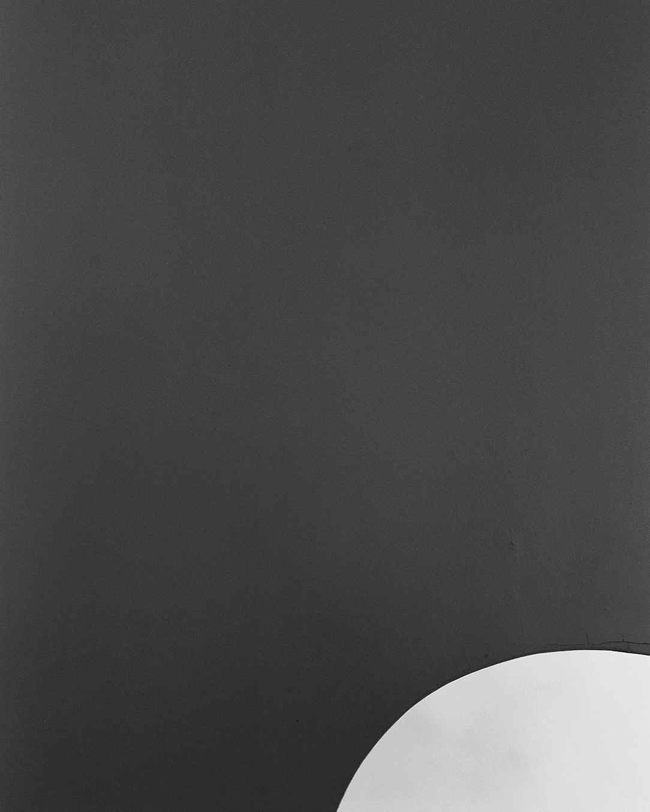

Leaving the Chamber
2018
Anechoic experiments abandoned by James Turrell and Robert Irwin along with their collaboration at the Garett Corporation are scored for Turrell’s Chicago “Skyspace” in view of the technical standards of the ShotSpotter acoustic gunshot surveillance sensor that oversees it. Sensory experience compromised by relational failure, across two franchises of perceptual technology.
